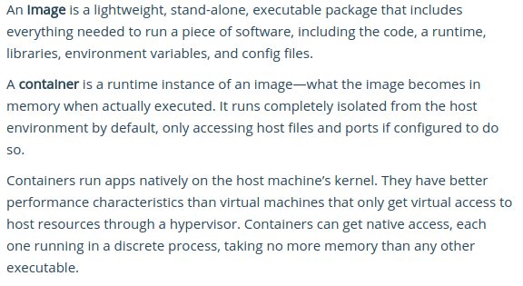
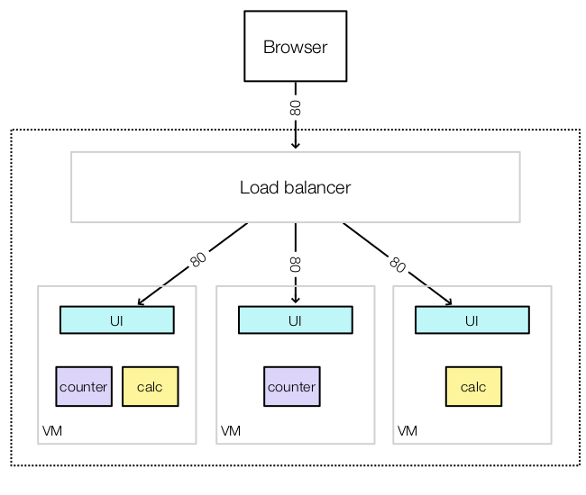

James Cooper - james@bitmechanic.com

(source: https://docs.docker.com/get-started/)
The most common way to create a Docker image is to write a Dockerfile. This file contains the list of commands to run to create the image. Each command produces a layer which is an immutable set of filesystem modifications.
Consquently, an image is a linked list of layers.
# Dockerfile for coopernurse/hello-docker
# Using debian as base - see: https://hub.docker.com/
FROM debian:stretch
RUN apt update && apt install -y python && apt clean
CMD ["python", "-c", "print 'hello docker'"]
# build image
$ sudo docker build -t coopernurse/hello-docker .
# run container
$ sudo docker run --rm coopernurse/hello-docker
# list layers in image
$ sudo docker history coopernurse/hello-docker
-p-vNext we'll introduce Swarm, which is a way to cluster multiple docker hosts together.
NOTE: All managers are ALSO workers
# Run on manager node - this will output a SWARM_TOKEN
docker swarm init --advertise-addr [ip-addr]
# Run on worker nodes
# use the token and ip-addr from command above
docker swarm join --token [swarm-token] [ip-addr]
Defines container to run on one or more nodes in the swarm
$ docker service create --replicas 3 --name myservice myimage
$ docker service ls
$ docker service rm myservice
A collection of services defined in a single YAML file
$ docker stack deploy --compose-file demo.yml swarm-demo
$ docker stack ls
$ docker stack rm swarm-demo
My favorite feature!
Next we'll jump into a demo where we'll boot a 3 node cluster on Digital Ocean, start a stack, and try doing some rolling updates.

The demo will use the doctl CLI provided by Digital Ocean, and the sup tool to run ssh commands against the VMs
Both tools are written in Go and install as single file executables with no dependencies.